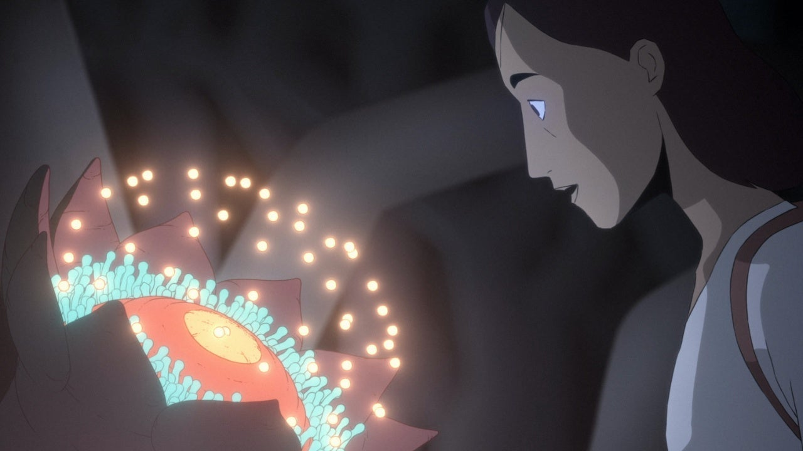

Talking about the "future", I believe that in several decades, human beings will be able to move to other planets and live on the planets. I want to depict a future of robots that can help human beings plant and fight, devices that can help human beings reproduce and have offspring, and how humans would live forever: after the physical body perishes, the same physical body is cloned, and the memories are implanted.
01 - Scavengers Reign is an American animated series. The series follows the survivors of the damaged interstellar cargo ship Demeter 227 who are stranded on Vesta, an alien planet bustling with flora and fauna but filled with dangers. Inside the show, there are full of sci-fi flora and fauna, and a lot of ultra-futuristic mechanical designs, I think I can reference some of the designs in there.

02 - Cyberpunk: Edgerunners is an animated series set in a futuristic city. I want to reference some of the medical equipment from this show, as it inspires me a lot.